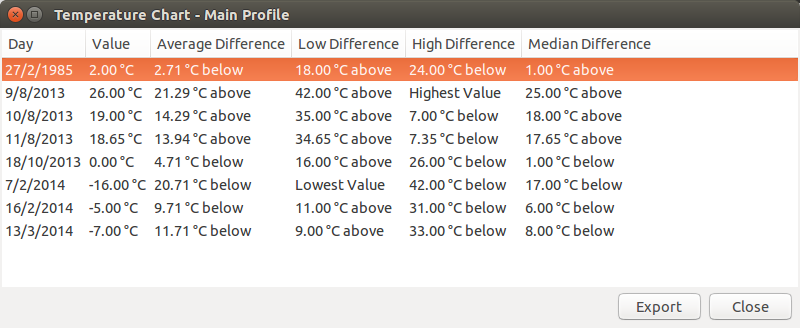

Viewing Charts
In addition to the Info windows that show just the average, median, range, etc. of a set of values, WeatherLog also has a feature to show a chart of how each value compares to the stats. To use this feature, select the Charts item in the Info menu.
The first two columns show the date and value, while the rest show how the value compares to the calculated data. In the above example, the temperature for the date 11/8/2013 is 13.94 degrees above the average, and 7.35 degrees below the high. As another example, 7/2/2014 had the lowest temperature, so instead of giving a numerical value it simply says that it was the lowest on that day.
The Export button in the lower corner allows you to export the chart to an HTML file.
Just like the Info feature, you can also choose a range of data to view a chart of, or you can select the specific dates to use.